指导教师：张同光
- 使用环境：
- 创建数据库：
- 启动服务器端：
- 使用客户端：
Linux操作系统，且装有TCP／IP,及POP3，SMTP协议，运行服务端要装有MYSQL数据库。
启动数据库 service mysqld start
进行数据库 mysql -u root -p123456
数据库密码一定要是123456create database myqq;
use myqq;;
create table usermsg(
username varchar(20),
userid bigint(16) unsigned not null auto_increment,
userpwd varchar (20),
userip varchar(20),
userport varchar(10),
userstatu int(2) default 0,
usermail varchar(40),
primary key(userid));
打开终端运行服务器，服务器IP地址是本机的IP地址，不能有错，在电脑联网情况下，PORT可任意输入未使用的端口，最好是1000以后，完成后点启动按钮，运行（如图1），格式如下：
./server
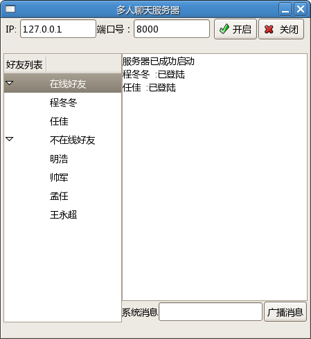
图1 服务器启动
双击客户端应用程序，弹出登录窗口（如图2），点击注册按钮跳到注册窗口（如图3），输入指定信息注册成功后弹出账号提示信息（如图4），这时请牢记自己注册的账号，返回登录
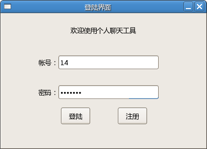
图2 登录窗口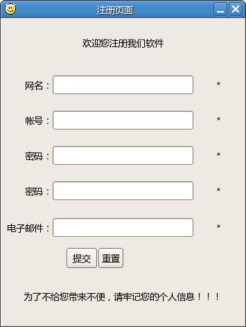
图3 注册窗口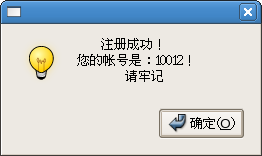
图4 弹出账号窗口登陆成功后可弹出好友列表（如图5），主窗口会显示当前用户的信息及好友列表，好友列表分成在线好友和不在线好友，不能与不在线好友聊天，单击一个不在线好友即弹出不能会话提示对话框，（如图6）
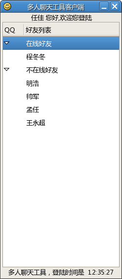
图5 好友列表窗口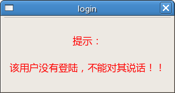
图6 提示对话框点击在线好友，可弹出聊天对话框，如图7.
图7 聊天对话框聊天对话框，第一个按钮是发送文件功能，如图8.
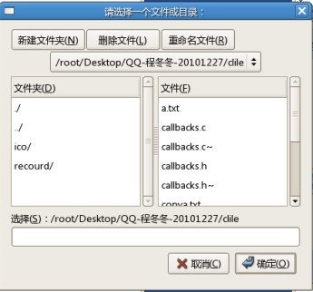
图8 选择文件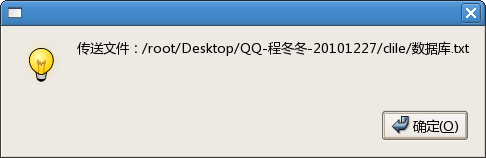
可以选择文件，删除文件，选择要传输的文件点确定，便开始传文件，现在的版本只能传文本文件，接受成功，如图9.
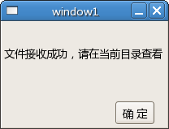
第二个按钮是发送电子邮件功能，如图10.
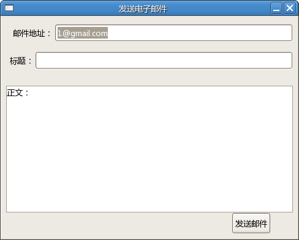
图10 发送电子邮件第三个按钮是显示聊天记录，点击，如图11.
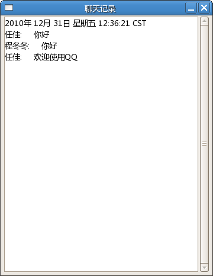
图11 聊天记录

指导教师：张同光
对本程序有意见或建议的请联系设计者 QQ：376726632 Email：zchengdongdong@gmail.com.com